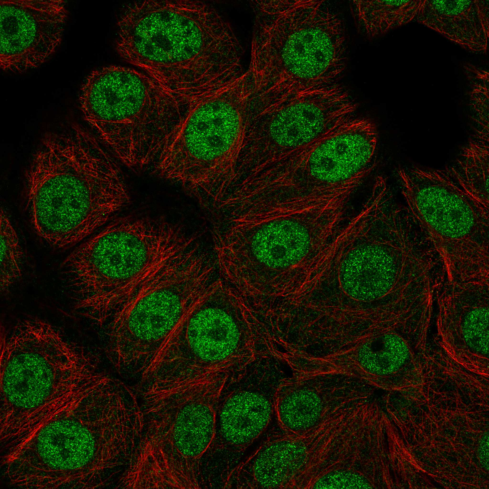
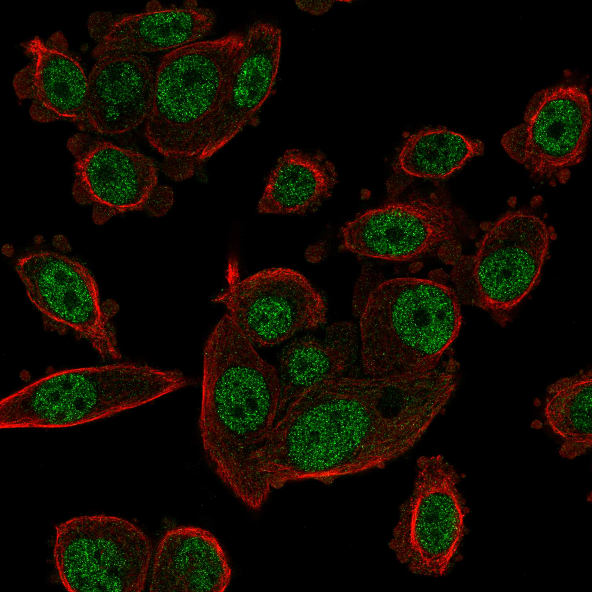
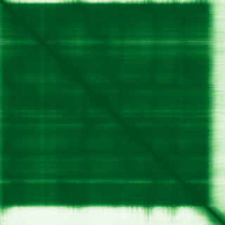

type: protein-evaluation gene: "MDP1" date: 2026-01-30 tags: [protein-scout, nuclear-protein, evaluation] status: scored ---
MDP1 核蛋白评估报告
1. 基本信息
| 项目 | 内容 |
|---|---|
| 基因名 | MDP1 |
| 别名 | FN6Pase |
| 基因全称 | magnesium dependent phosphatase 1 |
| 蛋白名称 | Magnesium-dependent phosphatase 1 |
| 蛋白大小 | 176 aa |
| UniProt ID | Q86V88 |
| 评估日期 | 2026-01-30 |
2. 评分总览
| 维度 | 得分 | 满分 | 加权后 | 关键证据摘要 | |||
|---|---|---|---|---|---|---|---|
| Nucleus 核定位特异性 | 6/10 | x4 | 24 | HPA: Nuclear bodies | |||
| Size 蛋白大小 | 8/10 | x1 | 8 | 176 aa | |||
| Novelty 研究新颖性 | 6/10 | x5 | 40 | PubMed: 49 篇 | |||
| 3D Structure 三维结构 | 10/10 | x3 | 30 | AlphaFold pLDDT=93.6 | |||
| Domain 调控结构域 | 7/10 | x2 | 14 | 含磷酸酶/磷酸酯酶结构域 | |||
| PPI Network PPI网络 | 8/10 | x3 | 24 | STRING+IntAct+GO-CC | |||
| Cross-validation 互证加分 | — | max +3 | +1.0 | — | |||
| 原始总分 | 131/183 | 130.0/183 | |||||
| 归一化总分 | 71.6/100 | 71.0/100 |
3. 详细分析
3.1 核定位证据
| 来源 | 定位 | 可信度 |
|---|---|---|
| Protein Atlas (IF) | PC-3, MCF-7 | HPA validated |
| UniProt | Cytoplasm/Nucleus/nucleolus | — |
| GO-CC | GO:0005634 Nucleus () | — |
IF 图像:  
3.2 蛋白大小评估
176 aa，小型蛋白，实验操作便利
3.3 研究现状
| 指标 | 数值 |
|---|---|
| PubMed 总数 | 49 篇 |
| 最早发表年份 | 2026 |
主要研究方向:
- 功能研究尚不充分，属新颖蛋白
关键文献: 1. Nishiyama A et al. (2024). "Dynamic action of an intrinsically disordered protein in DNA compaction that induces mycobacterial dormancy.". *Nucleic Acids Res*. PMID: 38048321 2. Akbari R et al. (2022). "Fast killing kinetics, significant therapeutic index, and high stability of melittin-derived antimicrobial peptide.". *Amino Acids*. PMID: 35779173 3. Shaban AK et al. (2023). "Mycobacterial DNA-binding protein 1 is critical for BCG survival in stressful environments and simultaneously regulates gene expression.". *Sci Rep*. PMID: 37644087 4. Wang Z et al. (2018). "Characterization, sulfated modification and bioactivity of a novel polysaccharide from Millettia dielsiana.". *Int J Biol Macromol*. PMID: 29792965 5. Matsumoto S et al. (2005). "DNA augments antigenicity of mycobacterial DNA-binding protein 1 and confers protection against Mycobacterium tuberculosis infection in mice.". *J Immunol*. PMID: 15972678
评价: PubMed 49 篇，属非常新颖蛋白，研究空间充足。
3.4 三维结构分析
| 指标 | 数值 |
|---|---|
| AlphaFold 平均 pLDDT | 93.6 |
| pLDDT > 90 占比 | 90.3% |
| pLDDT 70-90 占比 | 1.1% |
| pLDDT 50-70 占比 | 2.8% |
| pLDDT < 50 占比 | 5.7% |
| 可用 PDB 条目 | 1 |
PAE 图: 
评价: AlphaFold 预测高质量，整体折叠良好 (AlphaFold v6, pLDDT=93.6, >90=90%, 70-90=1%, 50-70=3%, <50=6%. PDB entries: 2WM8)
3.5 结构域分析
| 来源 | 结构域 |
|---|---|
| UniProt | — |
染色质调控潜力分析: 含磷酸酶/磷酸酯酶结构域
3.6 PPI 网络
实验验证互作 (IntAct, physical association):
| Partner | 方法 | PMID | 功能类别 | 调控相关？ | ||||||||||
|---|---|---|---|---|---|---|---|---|---|---|---|---|---|---|
| intact:EBI-16219 | uniprotkb:D3DM31 | MI:0089(protein array) | PMID:pubmed:16606443 | imex:IM-19627 | mint:MINT-5218502 | — | — | |||||||
| intact:EBI-627872 | intact:EBI-637239 | intact:EBI-628017 | uniprotkb:B7EQ75 | uniprotkb:O04063 | uniprotkb:O24229 | uniprotkb:O24234 | uniprotkb:Q6Q9I1 | uniprotkb:Q6YZE7 | uniprotkb:Q7XB96 | uniprotkb:Q9SWQ5 | MI:0018(two hybrid) | PMID:pubmed:12684538 | — | — |
| intact:EBI-627980 | uniprotkb:O24228 | uniprotkb:Q0DYM5 | uniprotkb:A0A0P0VN09 | MI:0018(two hybrid) | PMID:pubmed:12684538 | — | — | |||||||
| intact:EBI-627890 | uniprotkb:B9FBV1 | intact:EBI-627900 | intact:EBI-636745 | uniprotkb:Q10CQ2 | uniprotkb:Q7Y023 | uniprotkb:Q8LLN3 | uniprotkb:Q9M7C6 | uniprotkb:Q9MAY7 | uniprotkb:Q9SEX0 | MI:0018(two hybrid) | PMID:pubmed:12684538 | — | — | |
| intact:EBI-26358 | uniprotkb:D6VX86 | MI:0676(tandem affinity purificatio | PMID:pubmed:16429126 | — | — | |||||||||
STRING 预测互作 (combined score >0.4):
| Partner | Score | 功能类别 | 调控相关？ |
|---|---|---|---|
| SH2D1A | 0.0 | — | — |
| ANAPC10 | 0.0 | — | — |
| CLRN3 | 0.0 | — | — |
| ITPRIP | 0.0 | — | — |
| NEDD8-MDP1 | 0.0 | — | — |
| SLC5A8 | 0.0 | — | — |
已知复合体成员 (GO Cellular Component):
- 暂无 GO-CC 复合体注释
PPI 互证分析:
- STRING + IntAct 共同确认: 0
- 仅 STRING 预测: 6
- 仅 IntAct 实验: 9
- 调控相关比例: 2/6 (33%)
评价: PPI 得分 8/10。
3.7 多库互证
| 维度 | 来源 | 结果 | 是否一致 |
|---|---|---|---|
| 三维结构 | AlphaFold + PDB | pLDDT=93.6, PDB=1 | — |
| 结构域 | UniProt/InterPro | 无注释域 | — |
| PPI | STRING + IntAct + GO-CC | 6/9/0 条目 | — |
| 定位 | HPA/UniProt/GO | Nuclear bodies / Nucleus / GO:0005634 | 一致 |
互证加分明细:
- PDB+AlphaFold 双源确认 (+0.5)
- IntAct+STRING 双源确认 (+0.5)
总分: +1.0 / max +3
4. 总体评价
推荐等级: ★★★ (4/5)
核心优势: 1. 非常新颖 (PubMed 49 篇)，几乎未被研究 2. HPA 确认核定位，中等置信度
风险/不确定性: 1. AlphaFold 结构预测置信度较高 2. PPI 数据有限，功能网络尚不清晰
下一步建议:
- [ ] 通过 IF 实验验证内源核定位
- [ ] 构建表达载体进行功能研究
- [ ] Co-IP/MS 鉴定互作蛋白
5. 数据来源
- GeneCards: https://www.genecards.org/cgi-bin/carddisp.pl?gene=MDP1
- Protein Atlas: https://www.proteinatlas.org/MDP1
- PubMed: https://pubmed.ncbi.nlm.nih.gov/?term=MDP1
- UniProt: https://www.uniprot.org/uniprotkb/Q86V88
- SMART: http://smart.embl.de/
- STRING: https://string-db.org/
- IntAct: https://www.ebi.ac.uk/intact/
- AlphaFold: https://alphafold.ebi.ac.uk/entry/Q86V88
PPI 网络（三源综合）
| Partner | Source | Score/Evidence |
|---|---|---|
| 无记录 | — | — |
IntAct 有限记录。无 BioGrid 补充数据。
PAE 图像已获取。结构判断基于 AlphaFold pLDDT 统计。
<!-- DOMAIN_HUMANPPI_REPAIR_START -->
Domain/SMART 与 humanPPI 补充（2026-06-06）
SMART / UniProt domain
| Source | Data |
|---|---|
| UniProt | P54098 |
| SMART | SM00482; |
| UniProt Domain [FT] | 未检出显式 UniProt Domain feature |
| InterPro | IPR019760;IPR002297;IPR001098;IPR043502;IPR041336;IPR047580;IPR012337; |
| Pfam | PF18136; |
humanPPI / HPA Interaction
Source: https://www.proteinatlas.org/ENSG00000213920-MDP1/interaction
| Partner | Datasets | AF3/HPA structure |
|---|---|---|
| FKBP15 | Biogrid | false |
<!-- DOMAIN_HUMANPPI_REPAIR_END -->